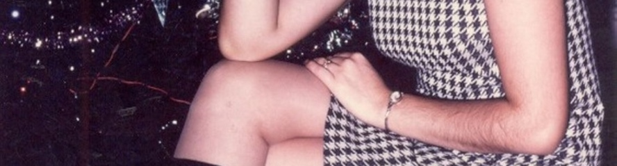
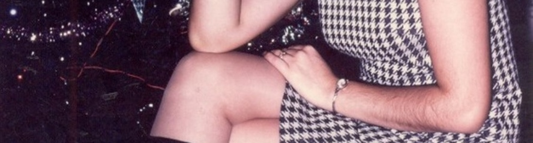
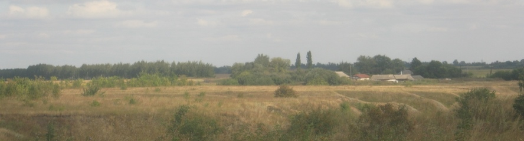
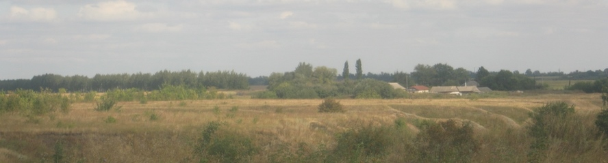
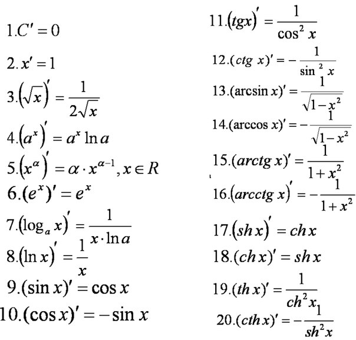

 

Опрос, тест
Методика
Принцип ненанесения ущерба испытуемому – требование организовать деятельность так, чтобы ни ее процесс, ни ее результат не наносили испытуемому (его здоровью, состоянию, социальному положению и др.) какого-либо вреда. Согласно этому принципу, испытуемый должен быть информирован о целях исследования, методах и формах использования полученных результатов. Необходимо получение согласия испытуемого на участие в обследовании. Используемые методики должны давать необходимую и достаточную информацию об испытуемом с точки зрения запроса педагогов и родителей. Важно также согласовать с обучающимися информацию, предоставляемую родителям и педагогам, причем она не должна ухудшить положение испытуемого.
AR-VR ревльность
Мы хотели задать несколько вопросов о виртуальной и дополненной реальности. Благодарим Вас за согласие участвовать в этом опросе. Подробнее →
Тест
Тестирование широко используется как в психологии, так и в педагогике. Однако данный метод имеет как общие, так и специфические характеристики для этих двух сфер. Подробнее →
Тест по математике
Предлагаю Вашему вниманию небольшой тест по математике. Математика Тот же тест в программе iren Подробнее →
Короткое замыкание
Короткое замыкание – это « не предусмотренное нормальным режимом работы замыкание между фазами, а в сетях, работающих с глухозаземлеными нетралями также замыкание фаз на землю». Подробнее →
{kind=link}
{kind=link}
{kind=link}